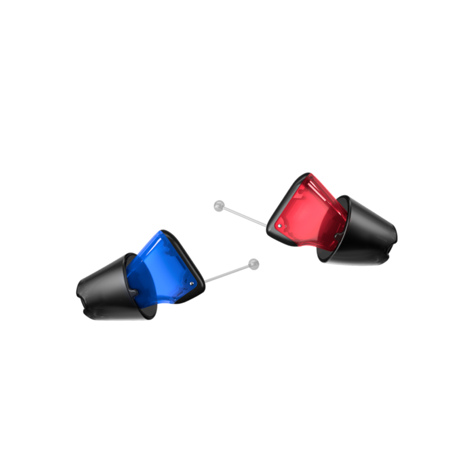
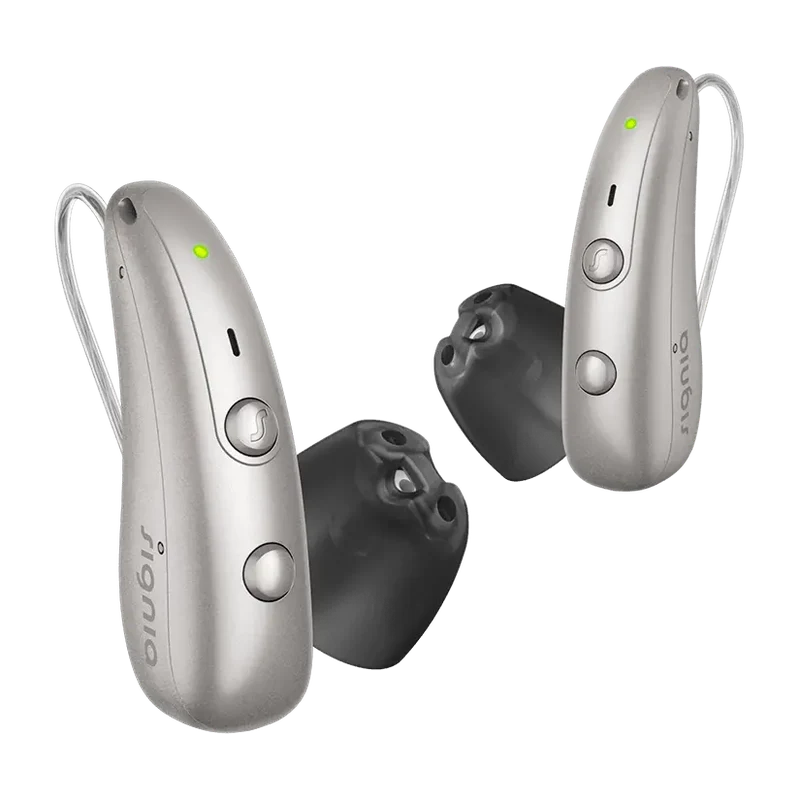
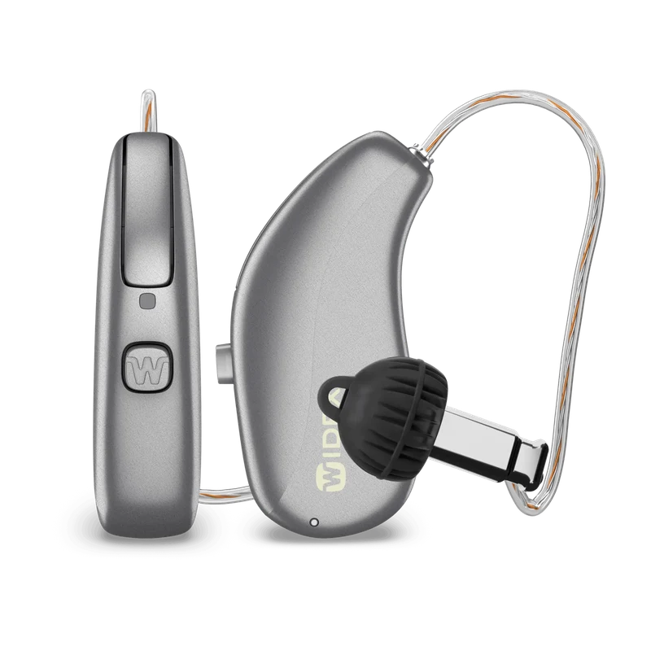
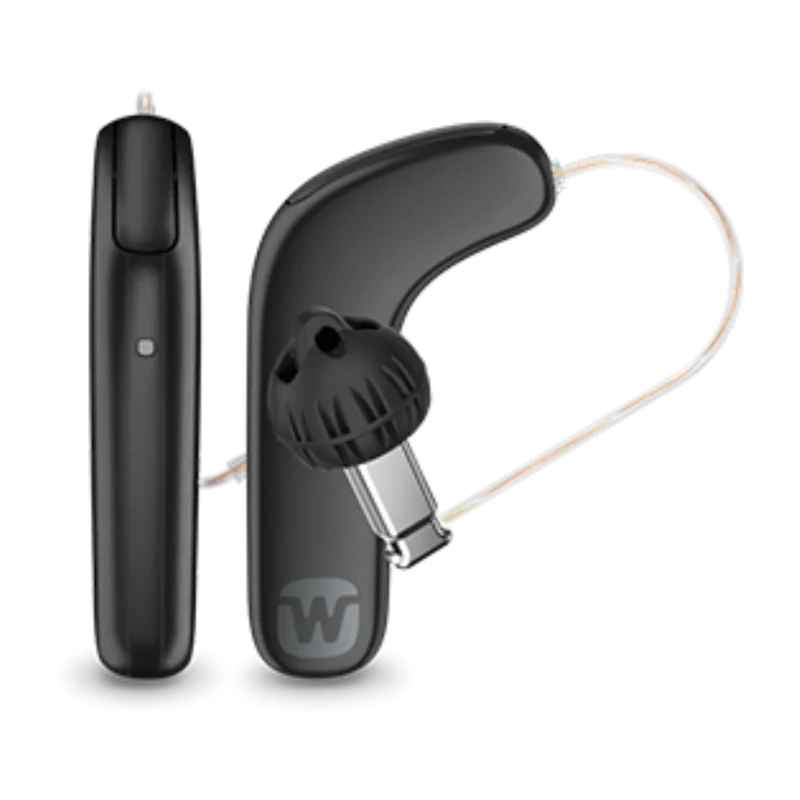
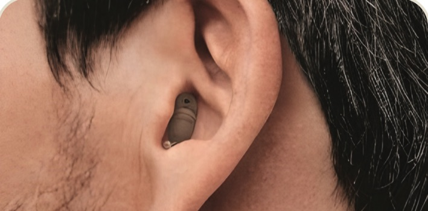
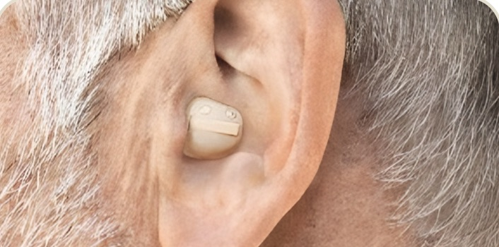
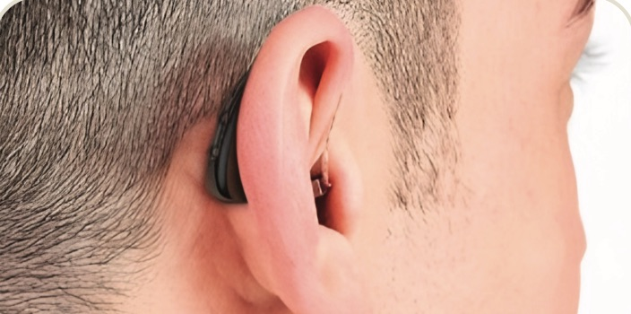
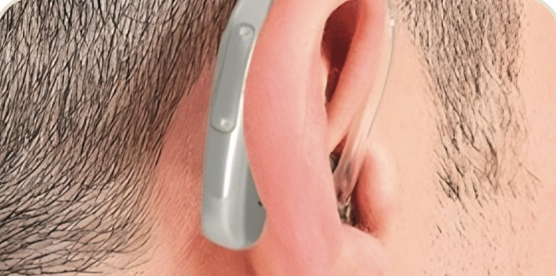

Signia
Silk Charge&Go IX
Microcanal
Na compra de um aparelho auditivo das linhas Exclusiva, Superior ou Intermediária Opimed, tenha até 100% de desconto no segundo aparelho auditivo.
Agende sua avaliação para conhecer as opções de aparelhos auditivos.
A melhor oportunidade do ano para cuidar da sua audição e compartilhar essa experiência com quem você ama.
Agende sua avaliação para conhecer as opções de aparelhos auditivos.
Como funciona
Na compra de um aparelho auditivo das linhas Exclusiva, Superior ou Intermediária Opimed, o segundo aparelho pode ter até 100% de desconto.A equipe Opimed informará o percentual aplicável conforme as condições da campanha.
Modelos
Todos os modelos das linhas Exclusiva, Superior e Intermediária participam da campanha.
Financiamento
Possibilidade de financiamento pelo Banco do Brasil e pela Caixa.
Quando
De 1º a 31 de outubro de 2026.Ou enquanto durarem os estoques.
Qual som você quer voltar a ouvir?
Você aumenta o volume da televisão, pede para repetir uma frase ou perde parte da conversa quando várias pessoas falam ao mesmo tempo. No restaurante, no telefone ou em um encontro de família, acompanhar tudo pode começar a exigir mais esforço.
Esses momentos ajudam a perceber onde a audição já interfere na rotina e quais situações você gostaria de voltar a acompanhar melhor.
Existem diferentes modelos, formatos e recursos. A escolha depende da necessidade auditiva, mas também de situações bem práticas. Conversar em casa, assistir à televisão, usar o telefone ou acompanhar várias pessoas falando ao mesmo tempo.
Na consulta audiológica, essas informações são consideradas para apresentar os tipos de aparelhos auditivos que podem se encaixar melhor no seu dia a dia.

Signia
Microcanal

Signia
Receptor no Canal

Widex
Receptor no Canal

Widex
Receptor no Canal
Uma linha completa de aparelhos auditivos, com diferentes níveis de tecnologia. A indicação considera o grau da perda, a rotina e as preferências de cada pessoa.
| Níveis de tecnologia | TV & streaming de telefone | Conversa no silêncio | Conforto durante o transporte | Ouvindo música | Conforto ao ar livre | Conversa durante o transporte | Conversa em ruído moderado | Conversas ao ar livre | Conversa em ruído alto |
|---|---|---|---|---|---|---|---|---|---|
| Mantenha-se conectado à fala ou à música transmitida da TV ou do smartphone. | Equilíbrio entre fala clara e sons ambientais, para uma experiência sonora natural. | Mantenha o ruído confortável ao viajar de carro ou transporte público. | Desfrute de música com qualidade sonora natural e autêntica. | Ouça confortavelmente, mesmo em situações com ruído de vento. | Melhore as conversas ao viajar de carro ou transporte público. | Ouça a fala acima de um fundo moderadamente ruidoso, como um jantar em família. | Ouça a fala ao ar livre em condições de vento. | Ouça a fala em ambientes barulhentos e lotados, como restaurantes ou festas. | |
| Exclusiva | ★★★★★ | ★★★★★ | ★★★★★ | ★★★★★ | ★★★★★ | ★★★★★ | ★★★★★ | ★★★★★ | ★★★★★ |
| Superior | ★★★★★ | ★★★★★ | ★★★★★ | ★★★★★ | ★★★★★ | ★★★★★ | ★★★★★ | ★★★★★ | — |
| Intermediária | ★★★★★ | ★★★★★ | ★★★★★ | ★★★★★ | ★★★★★ | ★★★★★ | — | — | — |
| Essencial | ★★★★★ | ★★★★★ | ★★★★★ | ★★★★★ | ★★★★★ | — | — | — | — |
★ Quanto mais estrelas, maior o desempenho na situação. A indicação do nível ideal depende da avaliação auditiva.
Representante

Microcanal
CIC

Intracanal
ITC

Receptor no canal
RIC

Retroauricular
BTE
Recarregáveis
Praticidade e autonomia.
Inteligência artificial
DNN (Deep Neural Network) que se adapta ao ambiente.
Conexão com celular, notebook e TV
Chamadas, músicas e áudio.
3 a 5 anos de garantia
Mais tranquilidade.
Nos primeiros dias, a televisão, uma conversa em grupo ou os sons do dia a dia podem ser percebidos de outra forma. Por isso, o acompanhamento faz parte do atendimento habitual da Opimed, com orientação e ajustes conforme a necessidade de cada pessoa.
A Opimed atua há 37 anos em saúde auditiva. Esse histórico aparece na fidelização de seus pacientes, no número de recompras e na durabilidade do aparelho auditivo, além do atendimento de diferentes gerações. Tudo isso, com equipe especializada em toda a reabilitação auditiva.
Aproveite a assistência técnica e laboratório de prótese exclusivo para pacientes Opimed. Isso promove maior rapidez na devolução do aparelho auditivo nas manutenções. Seu aparelho auditivo é um produto eletrônico, assim é necessário realizar manutenções semestrais.
A televisão ficou mais alta. Algumas perguntas precisam ser repetidas. Em conversas com várias pessoas, seu pai, sua mãe, seus avós ou alguém próximo participa menos do que antes. A família também pode dar o primeiro passo na busca por informações.
Se você está pesquisando aparelhos auditivos para alguém próximo, pode preencher o formulário com seus dados. A equipe Opimed entra em contato para entender a situação.
Atendimento excepcional! Com a mudança da assistência técnica ficou bem melhor, peguei meu aparelho em 72h com a nova modalidade. Sem falar que a equipe foi muito atenciosa e resolveu meu problema rapidamente. Profissionais super capacitados e educados. Me senti seguro e muito bem atendido durante todo o processo.
Pedro L.
Avaliação no Google
O atendimento é excelente. As meninas super educadas e alegres. Sempre tentando resolver tudo que possível. E o que mais gostei foi ver uma empresa onde os funcionários estão sempre sorrindo, por que é muito ruim ser atendido com cara fechada. E a opimed tem esse diferencial.
Francisco F.
Avaliação no Google
A empresa realmente se dedica a oferecer um atendimento personalizado e de alta qualidade.
Adrielly B.
Avaliação no Google
Na compra de um aparelho auditivo das linhas Exclusiva, Superior ou Intermediária Opimed, o segundo aparelho pode ter até 100% de desconto. A equipe Opimed apresenta os modelos disponíveis e informa qual percentual de desconto se aplica à compra, conforme as condições da campanha.
Sim. Já na compra de um modelo da Linha Essencial, o segundo aparelho pode ter outras faixas de desconto. Consulte a equipe Opimed.
Não. O percentual de desconto pode variar conforme a linha e a condição de pagamento escolhida.
As condições variam conforme a forma de pagamento escolhida, podendo atingir até 100% de desconto no segundo aparelho.
O acompanhamento faz parte do atendimento habitual da Opimed.
A escolha depende da necessidade auditiva e da rotina de cada pessoa. Durante o atendimento, a equipe Opimed orienta sobre as opções adequadas para o seu caso.
A equipe Opimed entra em contato para entender a sua necessidade (por telefone ou WhatsApp), agenda o atendimento e apresenta a opção adequada para o seu caso.
De 01/10/2026 a 31/10/2026 ou enquanto durarem os estoques.
Preencha os dados. A equipe Opimed entra em contato para:
Recebemos seus dados.
A equipe Opimed entrará em contato para continuar o atendimento.